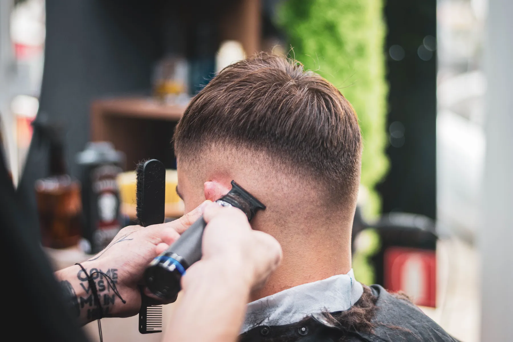
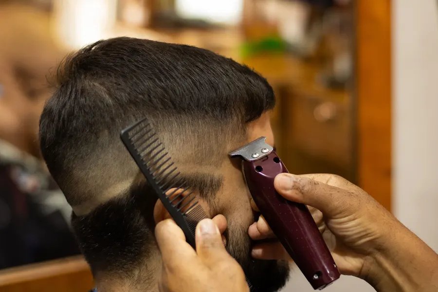
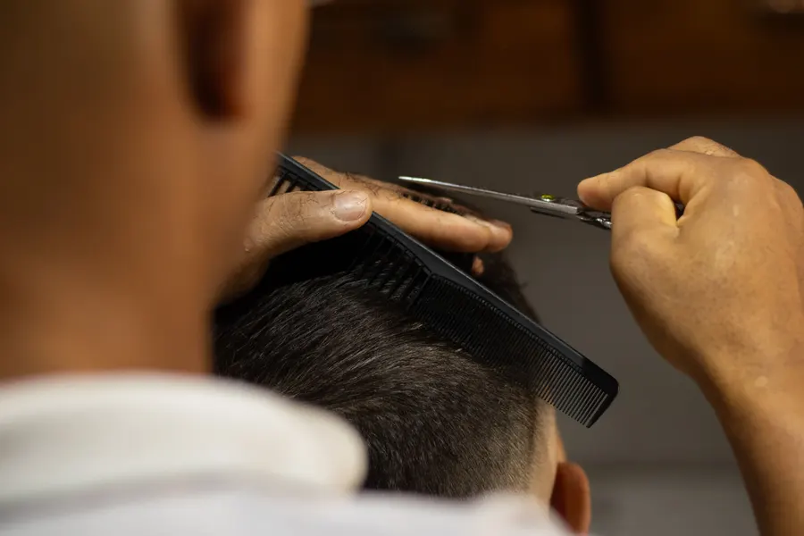
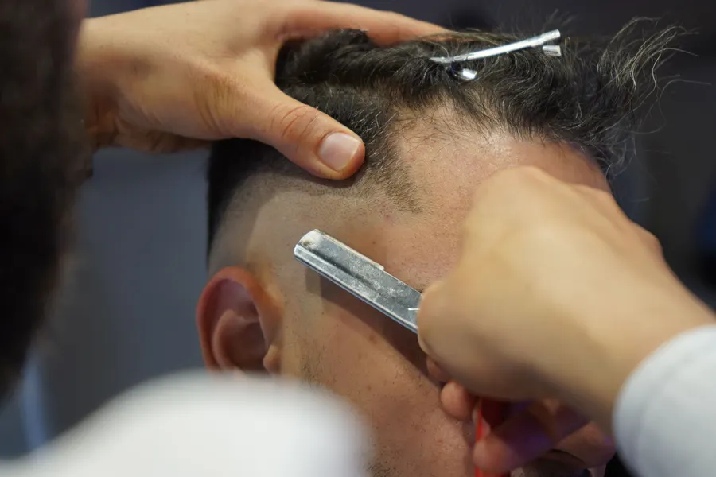
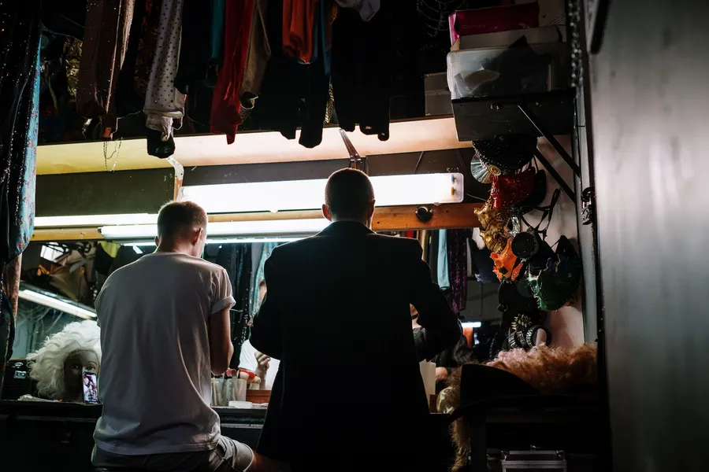
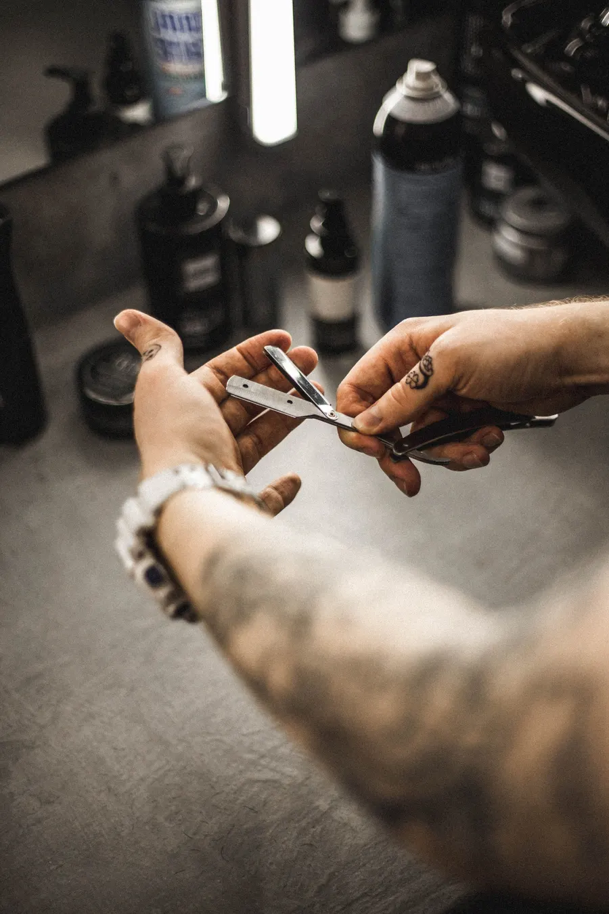

Geçiş,
çizgi,
imza.
Fade, sanatsal kesim, cilt bakımı ve manikür. Hizmeti seçin, randevu notunuz kendiliğinden yazılsın; takvimi açtığınızda boş saati seçmeniz yeterli.

Makine, makas, ustura.
Yeni müşteri koltuğa oturmadan önce işçiliği görmek ister. Yayında bu üç kare sizin elinizin, sizin salonunuzun fotoğrafı olur.

01Geçiş
Tarak ve makineyle, yüksekliği size göre.

02Makas
Üstte form, çizgide denge.

03Ustura
Son dokunuş: temiz bir çizgi.
Seçin, not yazılsın.
Başlıklar Instagram'daki öne çıkanlarınızdan; alt başlıklar örnektir. Yayında kendi hizmetleriniz ve süreleri durur.
Salonun dışında da.
Instagram'da paylaştığınız sahne, festival ve basın işleri Google'dan gelen yeni müşteriye de görünsün. Yayında her durak kendi fotoğraf ve videolarıyla açılır.
 01Antalya sahne
01Antalya sahneSahne işlerinin kareleri.

02ErzurumEtkinliğin öne çıkan anları.

03Hair FestivalFestival işleri tek yerde.
Yerel basında yer alan at yelesi çalışması; yayında haber bağlantısıyla.
Aynadan önce bakın.
Fatih Mahallesi.
- Adres
- Fatih Mah. 1925 Sk. No:87/B, Pamukkale / Denizli
- Çalışma
- Yalnız randevuyla · Pazar kapalı
- @huseyincaybas20
Kesim güzel mi? Bir satır da Google'a.
Google'da değerlendirin